ECON 1116 • Principles of Microeconomics • Chapter 13
Strategic Interaction — Oligopoly, Game Theory & Competition
Coke and Pepsi spend $10 billion a year fighting each other to a draw. Game theory explains why neither can stop.
Dr. Richeng Piao
Department of Economics
Northeastern University
Learning Objectives
13.1
Describe oligopoly and measure market concentration with CR4 and HHI
13.2
Set up a payoff matrix and identify each player’s dominant strategy
13.3
Find Nash equilibria and explain why they can be collectively suboptimal
13.4
Explain why cartels are inherently unstable using the prisoner’s dilemma
13.5
Explain the kinked demand curve and why oligopoly prices are sticky
13.6
Analyze how repeated games and reputation sustain cooperation
Where We Are on the Spectrum
Ch 10
Perfect competition. Many firms, identical product. Nobody watches anybody.
Ch 12
Monopolistic competition. Many firms, differentiated. Still too many to track.
Ch 13 — today
Oligopoly. A few large firms. Each one watches the others constantly.
Ch 11
Monopoly. One firm, no rivals to react to.
Oligopoly sits next to monopoly — but with a twist the other structures don’t have: strategic interdependence. With only a few firms, your best move depends on what your rivals will do. That single idea is the whole chapter.
Airlines, smartphones, cloud computing, soft drinks, gas stations, wireless carriers, game consoles — the markets behind the biggest brands you know.
Two Puzzles, One Answer
The cola war. Coke and Pepsi together spend over $10 billion a year on advertising — yet their market shares barely move. So why don’t they both just stop and pocket the cash?
The gas stations. Two stations on the same corner post nearly identical prices — and re-match within hours of any change. They never spoke. How do they stay in lockstep?
Both puzzles have the same explanation: when only a few firms share a market, each one’s best decision hinges on what the others will do. You can’t just “find the profit-maximizing price” — you have to anticipate the reaction. We need a new tool: game theory.
One More Puzzle: Why Match a Rival’s Lower Price?
Best Buy, Target, Dick’s, Staples — nearly every big retailer promises to match a competitor’s lower price. It looks like fierce competition. Is it?
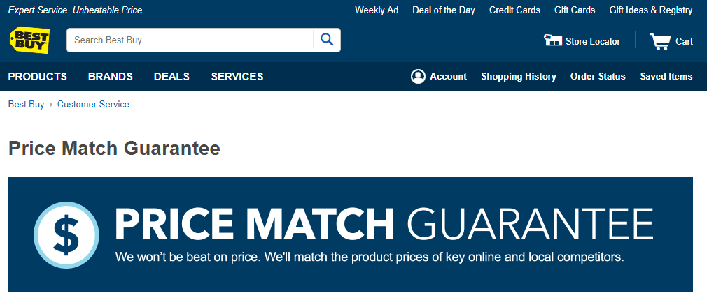
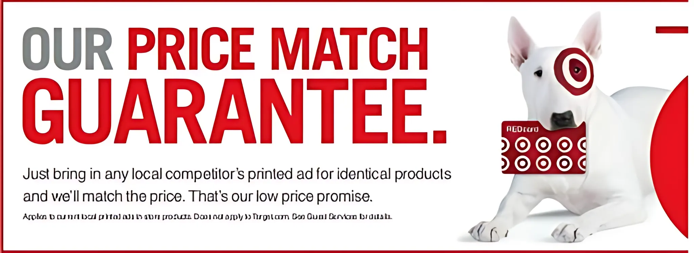
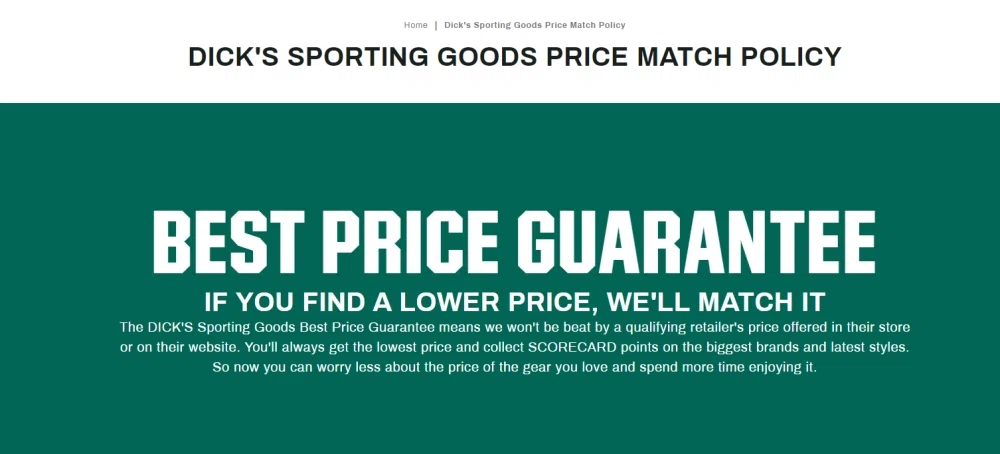
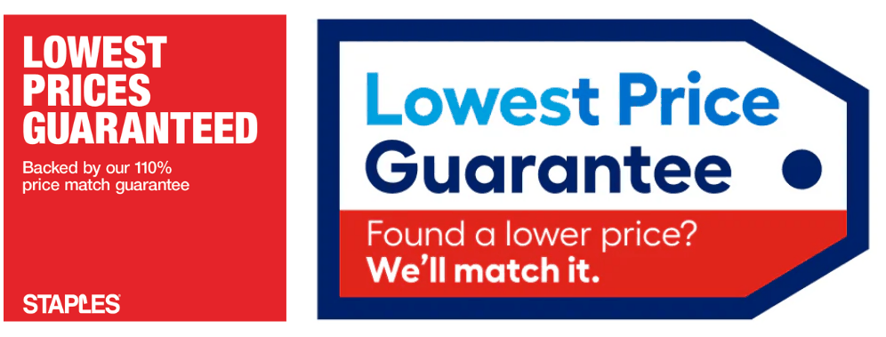
Here’s the twist: a promise to match any lower price can remove every rival’s reason to ever cut — quietly keeping prices high, not low. Hold that paradox — we crack it in §13.4.
Section 1 · LO 13.1 & 13.5
Oligopoly — The In-Between Market
A few big firms, locked in mutual watching
What Is an Oligopoly?
Oligopoly: a market dominated by a small number of large firms, where each firm’s strategic decisions are interdependent with those of its rivals.
Strategic interdependence: each firm’s best move depends on what its rivals choose. A price cut by one airline forces the others to respond.
The exact number matters less than the core feature: each firm is big enough that its choices move the market — so everyone watches everyone.
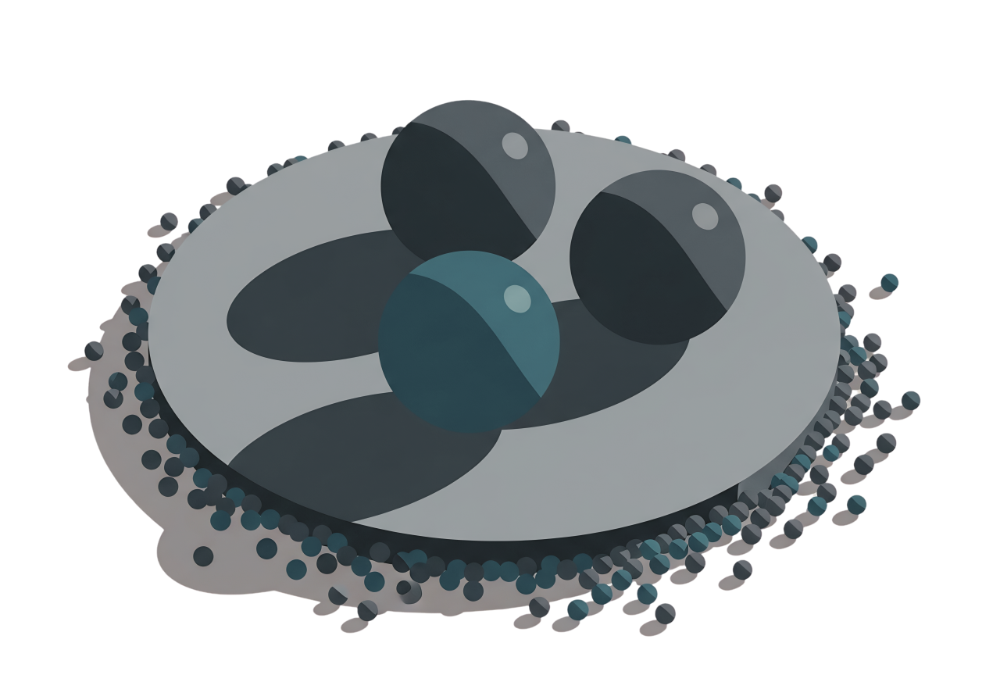
Why Do Oligopolies Exist?
The same barriers to entry from Ch 11 — but here they leave a handful of survivors, not one.
Economies of scale
Airlines, autos, chips: minimum efficient scale is billions in fixed cost. A new airline must match Delta’s entire route network first.
Network & switching costs
Only three big cloud providers — AWS, Azure, Google Cloud — because firms embed their systems and can’t easily switch.
Patents & brand
Proprietary technology and brand loyalty wall off the market. Apple moves; Samsung must react — not a no-name startup.
High barriers → few firms → each is large enough to matter → strategic interdependence. The structure is built by the same forces that build monopoly — they just stop one step short.
↓ One live case per barrier — TJ Maxx (scale), streaming (switching costs), Gillette razors (patents & brand)
Barrier 1 · Economies of Scale
Hidden in Plain Sight: TJ Maxx, Marshalls & HomeGoods
The treasure-hunt giant
TJ Maxx, Marshalls, and HomeGoods are all one company — TJX, headquartered in Framingham, MA. It rings up ~$54B a year — more than Macy’s and Nordstrom combined — while looking like the discount underdog. The scarcity is engineered: tiny quantities, no two stores alike, stock rotates weekly — so “buy it now or it’s gone” is the strategy, not an accident.
It checks every oligopoly box:
☑ A few large firms (TJX, Ross, Burlington)
☑ Interdependence (chasing the same closeouts)
☑ Economies of scale (huge buying power)
☑ Long-run profit (the treasure-hunt moat)

Barrier 2 · Network & Switching Costs
The Streaming Wars: Locked In by Your Library
Switching costs lock you in
Your watch history, profiles, downloads, and the shows you can only get here make leaving painful — you start over somewhere else. So platforms spend to keep you: Netflix ~$17B/yr on content, Disney ~$25B — an arms race with no finish line. If one stops it loses subscribers; if all keep spending, it’s a prisoner’s dilemma.
It checks every oligopoly box:
☑ A few large firms (Netflix, Disney+, Max, Amazon)
☑ Interdependence (matched price hikes & content)
☑ Network & switching costs (your library + history)
☑ The arms race = a prisoner’s dilemma

Barrier 3 · Patents & Brand
A Textbook Oligopoly: The Razor Aisle
Heavy R&D & a blade arms race
Gillette spent ~$750 million developing the 3-blade Mach3 — then kept adding blades. In 2004 The Onion mocked the race with a fake “We’re Doing Five Blades” op-ed; two years later Gillette shipped the 5-blade Fusion. Cartridges are patented — only Gillette blades fit Gillette handles.
It checks every oligopoly box:
☑ A few large firms (Gillette + Schick ≈ two-thirds)
☑ Interdependence (the blade arms race)
☑ Patents & brand (patented cartridges)
☑ Long-run profit (razor-and-blades lock-in)

Measuring Concentration: CR4
Four-firm concentration ratio (CR4): the combined market share of the four largest firms. A quick gauge of how much the top players control.
US airlines (domestic passengers, BTS):
CR4 = 17.8 + 17.4 + 17.0 + 16.6
68.8%
national. On a single city-pair route, one carrier may hold 70%+.
HHI — Square the Shares
HHI = sum of squared market shares: s¹² + s²² + … Squaring makes big firms count disproportionately.
Same CR4 of 68.8% — but a balanced four (airlines) and a single 55% giant are completely different markets. CR4 misses it; HHI sees it.
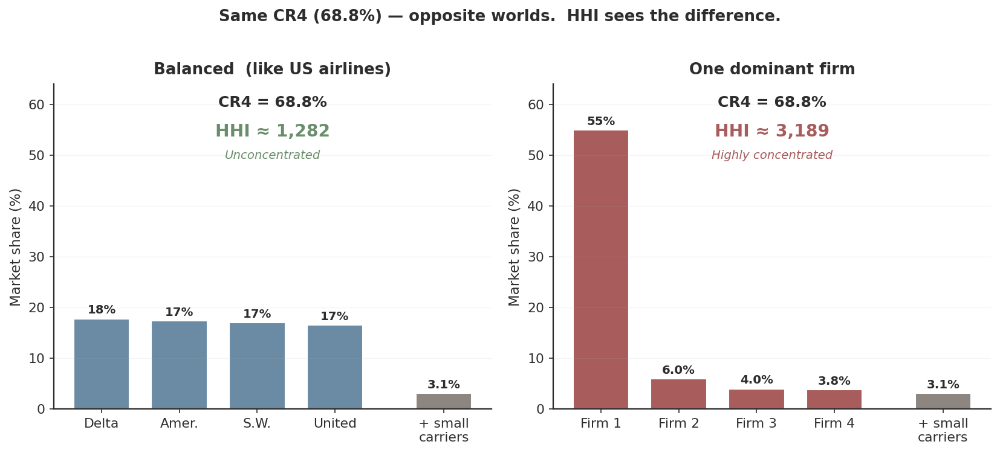
What the DOJ Does With HHI
| HHI range | Classification | Merger presumption |
|---|---|---|
| Below 1,500 | Unconcentrated | Unlikely to harm competition |
| 1,500 – 2,500 | Moderately concentrated | Review warranted |
| Above 2,500 | Highly concentrated | Presumed to enhance market power |
The DOJ also flags any merger that raises HHI by more than 200 points in an already-concentrated market. US airlines are moderate nationally — but often above 2,500 on individual routes where one or two carriers dominate.
A Cautionary Tale: Spirit Airlines
Spirit, the largest ultra-low-cost carrier, filed Chapter 11 bankruptcy on Nov 18, 2024 and emerged in March 2025 — smaller. It slashed capacity, sold aircraft, and exited many routes.
Spirit was the price-discipline force: its presence on a route meant fares 15–20% lower for everyone — the “Spirit effect.” As it retreated, the Big Four regained pricing power.
Competitor retrenchment — not just exit — softens price competition. The irony: the DOJ blocked a JetBlue–Spirit merger in Jan 2024 to preserve a low-cost rival, but the rival that remained was too weakened to discipline prices anyway.
The Kinked Demand Curve
Streaming prices froze for years, then jumped together: Netflix held $15.49 through 2024, then $17.99 in Jan 2025; Disney+ $13.99 → $15.99. Why so sticky?
Raise your price → rivals don’t follow. You lose lots of customers. Demand above is flat (elastic).
Cut your price → rivals immediately match. You gain few customers. Demand below is steep (inelastic).
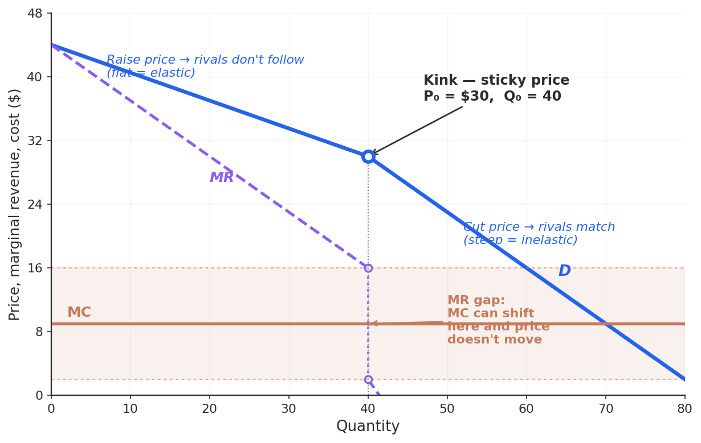
Why Prices Get Stuck — Drag the Cost
The firm produces where MR = MC. But MR has a vertical gap at the kink. Slide marginal cost up and down — watch the price.
Figure 13.2 — as long as MC stays between the gap edges ($2–$16), Q* = 40 and the price stays at $30. Only when MC leaves the gap does the price move.
Think Like an Economist
Netflix’s server costs drop 15%. The kinked demand model predicts Netflix will not lower its subscription price.
Why not? And what would have to change for streaming prices industry-wide to actually fall?
Intuition: a 15% cost drop keeps MC inside the gap — cutting price just invites matching with no volume gain. Prices fall only when a cost shock hits the whole industry hard enough to push MC out of the gap for everyone at once.
Case Study
A Parable of Duopoly
Two garbage trucks, 700 households, and the temptation to collude
Case Study · A Parable of Duopoly
The Garbage-Collection Duopoly
Two firms: David Inc. vs. James LLC — they compete on quantity (market share).
Barriers: only two licenses — a duopoly, not perfect competition.
Costs: big fixed cost (~$350K/truck), tiny marginal cost.
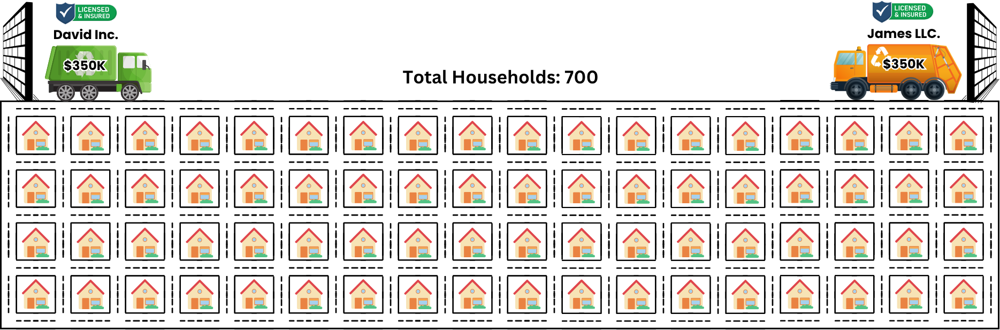
Case Study · A Parable of Duopoly
Market Demand: One Schedule, Three Structures
More trucks → more output → lower price. Cost is almost all fixed (TC ≈ $2,100), so profit = TR − $2,100.
| Q (households) | Price | TR | TC | Market profit | Market structure |
|---|---|---|---|---|---|
| 500 | $5 | $2,500 | $2,100 | $400 | Monopoly |
| 600 | $4 | $2,400 | $2,100 | $300 | Duopoly |
| 700 | $3 | $2,100 | $2,100 | $0 | Perfectly competitive |
The fewer trucks serving the 700 households, the higher the price and the higher the profit. Serving just 500 at $5 is the monopoly sweet spot ($400). Serve all 700 and price falls to $3 — zero profit. So the least output is the most profitable.
Households differ in willingness to pay (from ~$11 down to ~$3) — that descending ladder is the demand curve.
Case Study · A Parable of Duopoly
The Best a Duopoly Can Do: Collude
| Q | Price | TR | TC | Market π | David Q | David π | James Q | James π |
|---|---|---|---|---|---|---|---|---|
| 500 | $5 | $2,500 | $2,100 | $400 | 250 | $200 | 250 | $200 |
| 600 | $4 | $2,400 | $2,100 | $300 | 300 | $150 | 300 | $150 |
| 700 | $3 | $2,100 | $2,100 | $0 | 350 | $0 | 350 | $0 |
“Let’s produce like a monopoly!”
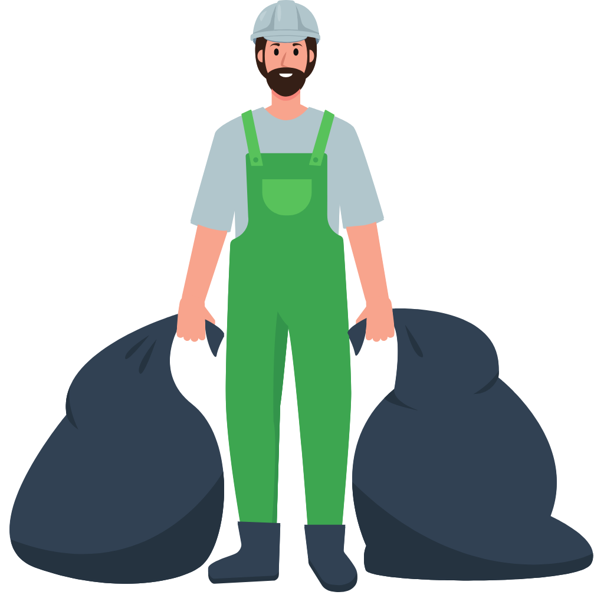
David
Cartel
250 | 250
James
“Sure!”
Case Study · A Parable of Duopoly
Collusion Is a Cartel — and It’s Illegal
Definition. A cartel is a group of competing firms that explicitly agree to restrict total output, choke supply, and force the price up to monopoly levels — exactly what David & James just did.
The legal barrier. Under the Sherman Antitrust Act (1890) in the US and Article 101 in the EU, explicit price-fixing is a per se violation — no efficiency excuse is allowed.
Penalties. Up to $100 million in corporate fines and 10 years in federal prison for the executives involved.
So the handshake is illegal — and fragile. Even if they could meet legally, each firm is tempted to quietly serve more than 250. Will the deal actually hold? That’s exactly the question we turn to next.
Case Study · A Parable of Duopoly
Cartels Reduce Supply — but They’re Fragile
Attention
A cartel reduces overall supply to push the price — and profit — up toward monopoly levels. That’s the prize David & James are chasing.
Good news — cartels are usually unstable
• The incentive to cheat is too strong for each member.
• Entrants (non-members) can undercut with lower prices.
• It’s hard to monitor whether everyone is keeping the deal.
• Cartels are illegal — the deal must stay secret.
Like a Jenga tower, the cartel stands only until one firm pulls a block. Let’s watch David and James do the math on cheating.
Case Study · A Parable of Duopoly
Why the Cartel Collapses to Competition
| Q | Price | David Q | David π | James Q | James π | Outcome |
|---|---|---|---|---|---|---|
| 500 | $5 | 250 | $200 | 250 | $200 | Not stable |
| 600 | $4 | 300 | $150 | 300 | $150 | — |
| 700 | $3 | 350 | $0 | 350 | $0 | Stable — no regrets |
David cheats first (+100)
Q: 250→350, market 600, P=$4. David π = 4×350−1050 = $350; James π = 4×250−1050 = −$50.
So James cheats too (+100)
Market 700, P=$3. James π = 3×350−1050 = $0. Both now at 350 — neither can do better by changing.
“Can I produce a little more?”
Competitive — 350 | 350
“Should I cheat too?”
Case Study · A Parable of Duopoly
The Math of Cheating: a Net Gain of +$150
One firm cheats and produces 100 more units. The price falls to $4, a $500 loss for the industry ($250 per firm) on the units they were already selling.
But the cheater earns $400 on the new units. Subtract its $250 share of the loss → a net gain of $150. So it cheats — and so does the other.
David: Q=350 250
James: Q=350 250
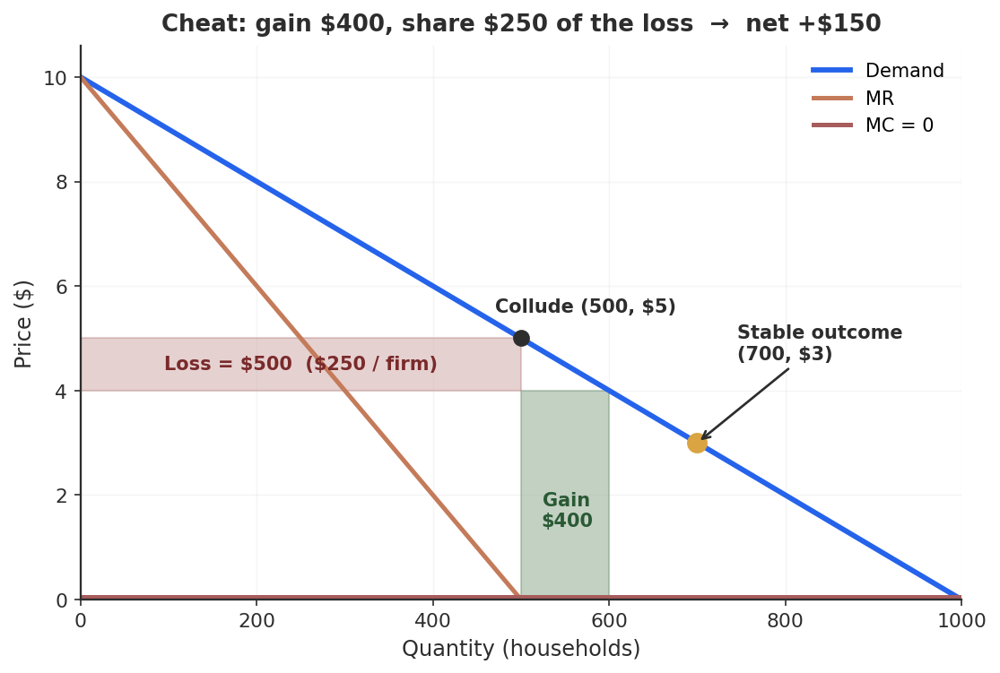
Case Study · From Garbage Trucks to Global Oil
OPEC: The Same Game, Real Oil
The Organization of the Petroleum Exporting Countries (OPEC), formed in 1960, coordinates oil production to hold prices up — a legal sovereign cartel. The same instability follows:
Members benefit when everyone sticks to quotas…
…but each gains more by exceeding its quota (just like David).
A chain reaction of cheating — plus non-OPEC supply and outside shocks — sends prices lurching.
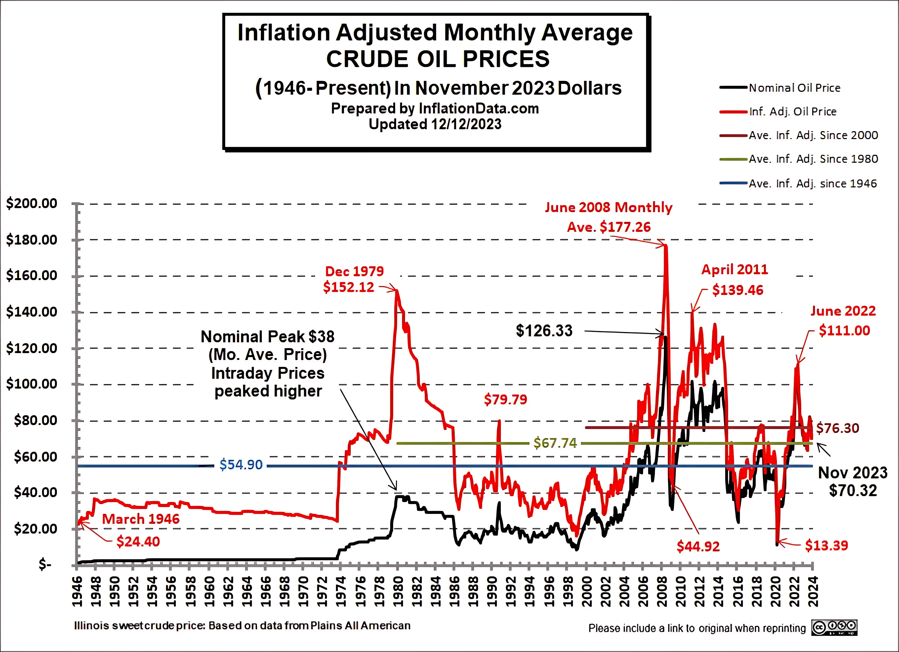
Section 2 · LO 13.2
Game Theory Basics
Players, strategies, payoffs — and the dilemma at the heart of it
Game Theory
Game theory: the study of strategic decision-making, where each player’s outcome depends on the choices of others.
Formalized by von Neumann & Morgenstern in the 1940s; now central to economics, political science, biology, and CS.
PLAYERS
the decision-makers
STRATEGIES
the choices available
PAYOFFS
the outcomes for each combo
The Payoff Matrix: EZ Gas vs. QuikFill
Two stations on one corner. Each picks High ($3.50) or Low ($3.00). Each cell shows (EZ Gas, QuikFill) weekly profit.
| QuikFill: High | QuikFill: Low | |
|---|---|---|
| EZ Gas: High | $800, $800 | $300, $1,100 |
| EZ Gas: Low | $1,100, $300 | $500, $500 |
EZ Gas profit QuikFill profit — both High ⇒ $1,600 joint; both Low ⇒ only $1,000 joint.
Dominant Strategy
Dominant strategy: a choice that’s best no matter what the other player does.
From EZ Gas’s view:
If QuikFill plays High: Low pays $1,100 > $800 → play Low
If QuikFill plays Low: Low pays $500 > $300 → play Low
Low is dominant for EZ Gas — and by symmetry, for QuikFill too.
| QF: High | QF: Low | |
|---|---|---|
| EZ: High | $800, $800 | $300, $1,100 |
| EZ: Low | $1,100, $300 | $500, $500 |
gold = EZ Gas’s Low row — better in both columns.
The Prisoner’s Dilemma
Both follow their dominant strategy → (Low, Low), each earning $500. But if both had picked High, each would earn $800. Rational individual choices leave both worse off.
Prisoner’s dilemma: each player has a dominant strategy to defect, yet mutual defection is worse for both than mutual cooperation.
The name: two suspects in separate rooms. Each is better off confessing whatever the other does — so both confess and get 5 years, instead of the 1 year each they’d get by staying silent.
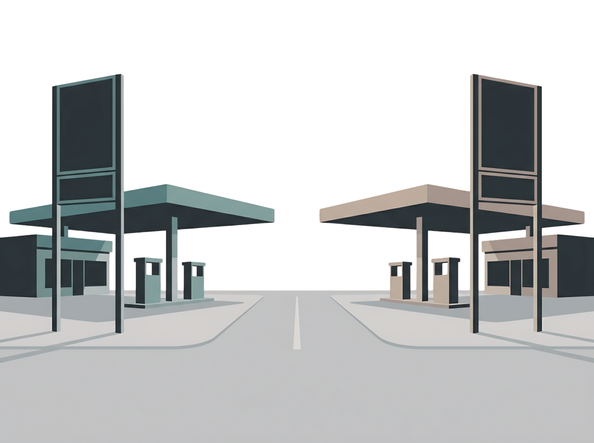
Poll — Why Don’t They Cooperate?
EZ Gas and QuikFill could both charge High and earn $800 each instead of $500. A friend says “just agree to both go High.” What’s the problem?
A. No problem — they’ll both go High and stay there
B. Each is tempted to secretly undercut to $1,100 — so the deal unravels
C. High prices are illegal, so they can’t
D. Customers wouldn’t notice the difference anyway
Click your answer. Press ↓ for results.
Poll Results
Answer: B. The cooperative (High, High) is not stable. Each station can earn $1,100 by quietly cutting to Low while the other holds High — so both are tempted, and the deal collapses back to (Low, Low).
This is the whole problem with cartels: the agreement is exactly the unstable cell. Hold that thought for §13.4.
Not Every Game Has a Dominant Strategy: Chicken
Two drivers speed at each other. The one who swerves is the “chicken”; if neither swerves, they crash. Here the best move depends on the other — no dominant strategy.
| B: Swerve | B: Hold Out | |
|---|---|---|
| A: Swerve | 3, 3 | 1, 5NE |
| A: Hold Out | 5, 1NE | 0, 0 |
Two Nash equilibria — one player yields. The model can’t say which; it comes down to credibility and resolve.
SAG-AFTRA video-game strike, 2024–25: actors demanded AI consent protections; studios held out. After 11 months of mutual loss, the studios swerved — July 2025: a 15.17% raise + AI guardrails.
Reshaping the Game: Golden Balls
On the British show Golden Balls, two contestants split a jackpot — a one-shot prisoner’s dilemma over £13,600. Split or Steal. Steal–Steal ⇒ both get nothing.
Nick announced: “I am going to Steal — but I’ll split with you afterward.” A bluff that worked as a commitment device: it made Split the only rational move for Ibrahim.
Ibrahim chose Split. Then Nick — who planned this — also chose Split. Both went home with half. Communication turned a defect-game into cooperation.
Even a one-shot dilemma can be reshaped by credible commitment and communication. Hold this idea — it’s the bridge to repeated games (§13.5), where commitment becomes routine.
Coke vs. Pepsi: The Advertising Arms Race
PepsiCo spent ~$5.9B on ads in 2024; Coca-Cola spends similarly — together $10–12B/year to move shares that barely budge. It’s a prisoner’s dilemma. (Stylized annual profits, $B.)
| Pepsi: Ad | Pepsi: No Ad | |
|---|---|---|
| Coke: Ad | $10, $10NE | $15, $5 |
| Coke: No Ad | $5, $15 | $12, $12 |
Advertising is dominant for both ($10 > $5; $15 > $12). Both advertise → $10 each, vs. $12 if neither did. $4B of joint profit destroyed every year.
1971 cigarette TV-ad ban removed the “defect” option for everyone at once: tobacco ad spending fell ~25% and profits rose. The government did what the firms couldn’t.
Economist at Work: Amazon’s Project Nessie
From ~2014–2019, Amazon allegedly ran an algorithm, “Project Nessie,” that tested whether rivals would follow its price increases. Raise a price; watch the competitors. If they matched, hold it. If not, reverse it.
Allegedly generated $1B+ in excess revenue (FTC v. Amazon, 2023). It was an automated tit-for-tat — no back-room meeting, just code.
The deep question for antitrust: if an algorithm produces the same prices as an illegal cartel, does it matter that no human picked up the phone? (FTC trial scheduled October 2026.) We return to this in §13.4.
Halfway
Break
Next: the one idea that ties every game together — Nash equilibrium
Section 3 · LO 13.3
Nash Equilibrium
Where the market settles — with no one wanting to move
Nash Equilibrium
Nash equilibrium: a set of strategies where no player can do better by changing their own move alone, given what everyone else is doing.
Named for John Nash (published 1950, age 21; Nobel 1994). His insight: a stable outcome must be one where every player is already best-responding to the others. No one wants to deviate.
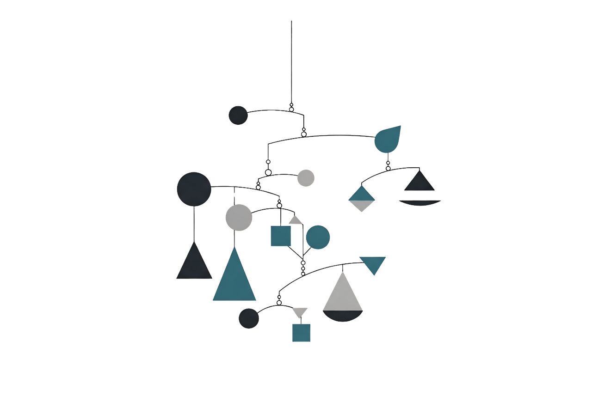
Finding the Nash Equilibrium
For each cell ask: could either player do strictly better by switching alone? If no for both → Nash.
| QF: High | QF: Low | |
|---|---|---|
| EZ: High | $800, $800 | $300, $1,100 |
| EZ: Low | $1,100, $300 | $500, $500NE |
(Low, Low) — $500 each: switch to High → $300 < $500. Neither wants to move. Nash. ✓
(High, High) — $800 each: EZ can switch to Low → $1,100 > $800. Wants to deviate. Not Nash. ×
The jointly-best cell is not the stable one. That gap is the heart of oligopoly.
Stable ≠ Best
Why Nash matters: firms don’t need to call each other or know game theory. Through trial and error — watching rivals, adjusting — markets converge on Nash. It’s self-enforcing.
But not optimal: (Low, Low) leaves $300/week each on the table vs. (High, High). The cola war wastes billions. Nash is about stability, not happiness.
Common misconception: “Nash means everyone’s happy with the result.” No — it means no one can do better alone. A stable outcome and the best outcome are often different things.
Shifting a Nash: in 2024–25 Intel, TSMC & Samsung all over-invested in fabs (a capacity prisoner’s dilemma). The US CHIPS Act subsidized building — deliberately making “invest” dominant to move the equilibrium.
Section 4 · LO 13.4
Cartels, Collusion & Why They Break Down
The dilemma you can’t agree your way out of
What Is a Cartel?
Cartel: firms that explicitly coordinate output or pricing to act like a single monopolist and share the profits.
Illegal for private firms: Sherman Act §1 (US) & EU Treaty Art. 101. Price-fixing is a per se violation — up to $100M fines and 10 years in prison.
Sovereign nations are exempt — which is why OPEC can operate openly. It holds ~80% of proven oil reserves; OPEC+ pumps ~38–40% of world output.
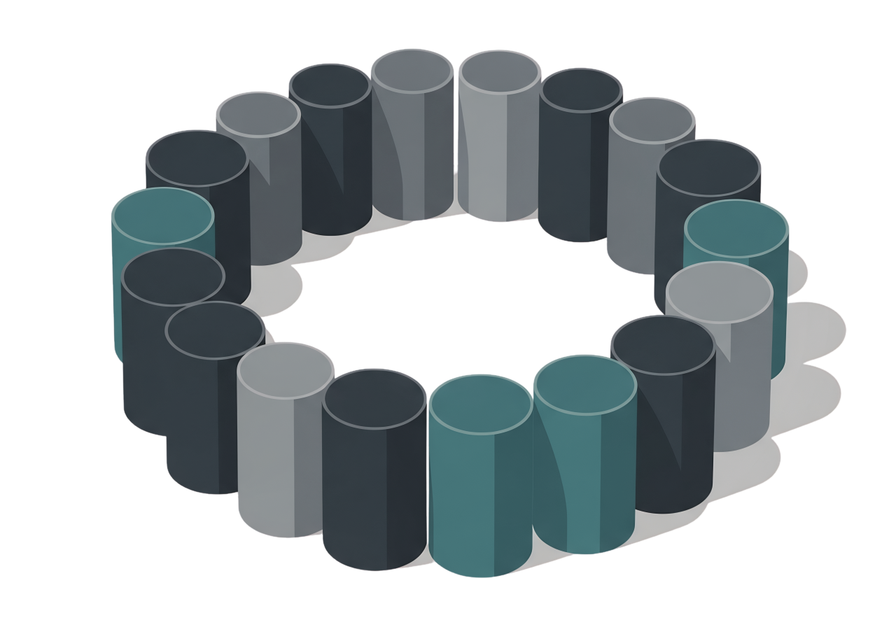
The OPEC+ Prisoner’s Dilemma
A cartel works like a joint monopolist: restrict output, push price up, assign each member a quota. In practice it’s the gas-station game with national flags.
| Others: Restrict | Others: Cheat | |
|---|---|---|
| Saudi: Restrict | High price, shared profits |
Saudi bears cost, others gain |
| Saudi: Cheat | Saudi gains unilaterally |
Price collapses, low profit for allNE |
Cheating is dominant. Russia, needing war funding under sanctions, pumped ~9.12 mb/d — above quota — reclassifying crude as “condensate” to hide it. Saudi (the swing producer) cut to ~8.97 mb/d.
In 2020, a previous deal collapsed; Saudi flooded the market and oil fell below $20 — briefly negative for US futures. Everyone lost. That threat keeps the cartel loosely together.
Why Cartels Break Down
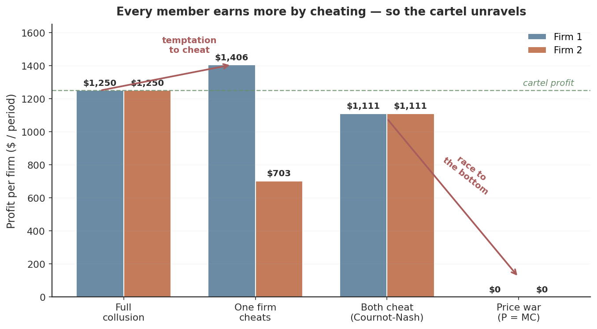
Cheating is structural. Everyone gains by exceeding quota — most of all when prices are high (Rotemberg–Saloner: price wars in booms).
Detection is slow. Production data lags weeks; secret cuts are invisible until customers switch.
More members, more cracks. OPEC+ has 22 states — 22 potential defectors.
Outsiders fill the gap. High prices revive US shale — non-members expand as the cartel restricts.
Coordinating Without Talking
Tacit collusion: price coordination with no explicit agreement — through signaling, parallel behavior, or the shared expectation that rivals will match.
Price-match guarantees — that wall of logos from the start of class — sound pro-consumer, but they remove the temptation to defect. If Best Buy will instantly match any cut, Target gains nothing by undercutting. The “Low” row disappears; both hold High.
The FTC has long seen the danger: Ethyl Corp. v. FTC (1984) challenged most-favored-customer clauses among gasoline-additive makers as facilitating practices that softened competition.
Turning the Cartel Against Itself
DOJ Leniency Program (1978, strengthened 1993): the first firm to self-report a price-fixing conspiracy gets full immunity. This makes the cartel a true prisoner’s dilemma — a race to defect to the prosecutor first. One official called it engineered “paranoia about who defects first.”
It works. The global auto-parts cartel: $3B+ in criminal fines. The 1950s electrical-equipment conspiracy (GE, Westinghouse) rigged bids on a “phases of the moon” rotation — until 1961, when 29 firms were convicted and executives went to prison.
Even sophisticated coordination collapses once detected — and leniency is designed to guarantee detection by rewarding the first defector.
Poll — Inside the Cartel
OPEC+ has set quotas and oil prices are high. For any single member, what is the strongest individual incentive right now?
A. Cut output even further to push prices higher still
B. Secretly pump above quota — sell extra barrels at the high price
C. Match its quota exactly — cheating never pays
D. Leave OPEC entirely
Click your answer. Press ↓ for results.
Poll Results
Answer: B. Cheating is the dominant strategy — sell extra barrels at the high price others are propping up. And the temptation is biggest exactly when the cartel is “succeeding” with high prices.
Multiply that incentive across 22 members and you see why every cartel is one defection away from a price war.
Algorithmic Collusion: When the Code Coordinates
Algorithmic collusion: pricing algorithms independently learn to sustain above-competitive prices — cartel outcomes with no human agreement.
Hub & spoke. One vendor (the hub) sells the same pricing tool to rival firms (the spokes). RealPage faced a DOJ suit for allegedly coordinating rent increases across thousands of landlords.
Independent learning. Calvano et al. (AER, 2020): simple reinforcement-learning bots, with no communication, converged on supra-competitive prices — punishing cuts in milliseconds. They learned: never cut.
The Sherman Act needs a “meeting of the minds.” But if algorithms reach cartel prices with no email, no meeting — should the test be whether firms communicated, or whether the outcome looks like coordination?
Section 5 · LO 13.6
Repeated Games & Real-World Strategy
When the game never ends, cooperation can survive
One-Shot vs. Repeated
A one-shot game is played once: EZ Gas and QuikFill set price a single time, and the dominant-strategy logic forces (Low, Low).
Repeated game: the same players interact over and over — so strategies can depend on past behavior, and cooperation impossible in one shot becomes sustainable.
Real firms compete quarter after quarter, year after year. Today’s price affects tomorrow’s relationship. That changes everything.
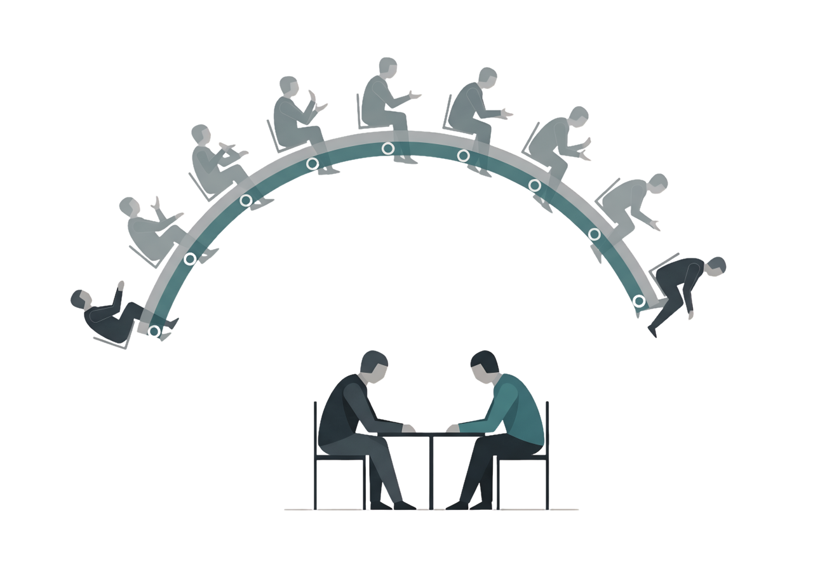
The Folk Theorem & the Discount Factor
Folk theorem: in an infinitely repeated game, players who value the future enough can sustain cooperation as an equilibrium. “I won’t torch a 20-year relationship for one quarter’s gain.”
Discount factor = how much you value the future. Near 1 (patient) → cooperate. Near 0 (desperate, near bankruptcy) → defect now. This is why price wars erupt in recessions.
The gas-station math: defecting to Low earns a one-time +$300 ($1,100 vs $800). But if QuikFill then matches forever, you lose $300 every week ($500 vs $800). The one-week gain is wiped out in a single week — so cooperation holds as long as you expect to stay in business.
Trigger Strategies
Tit-for-tat: cooperate first, then do whatever your rival did last period. Cooperate if they did; retaliate if they cut — then forgive when they return.
Grim trigger: cooperate until the first defection — then defect forever. No forgiveness. A harsher but powerful deterrent.
Axelrod’s tournaments (1980s): game-theory strategies competed at repeated prisoner’s dilemma. Tit-for-tat won — because it was cooperative, retaliatory, forgiving, and clear. It never beats any single rival, yet outperforms everything over the long run.
The Noise Problem
Signals are imperfect. A price “cut” might be a computer glitch. With tit-for-tat, one accidental defection triggers retaliation → counter-retaliation → a permanent spiral neither side intended.
Sept 26, 1983: a Soviet system reported 5 incoming US missiles. Lt. Col. Stanislav Petrov judged it a false alarm (a real strike would be hundreds). He was right — sunlight on clouds. An automated grim trigger would have meant nuclear war by noise.
The fix is forgiveness. Nowak & Sigmund (1992): generous tit-for-tat retaliates only ~90% of the time; tit-for-two-tat waits for two cheats before punishing. A little forgiveness breaks the death spiral — which is why durable oligopolies tolerate small deviations.
Repeated Games in the Wild
TSMC & Apple — mutual lock-in
Apple designs chips it can’t build; TSMC builds them in $15–20B fabs it can’t repurpose. TSMC’s no-compete pledge (it never sells products competing with customers) is a credible commitment. Each product cycle is another round.
Uber & Lyft — tacit duopoly
Two platforms, near-identical prices and surge patterns. Neither needs to call the other: each knows a cut will be matched within hours, making a price war pointless. Repeated interaction sustains it.
Reputation as a commitment device. A firm known for keeping its word has more to lose from defecting — so partners trust it, enabling more cooperation. Investment banks, law firms, and builders invest heavily in reputational signals for exactly this reason. (More in Ch 19: platforms scale reputation to millions.)
Appendix 13A
Sequential Games & Game Trees
When one player moves first
The Game Tree & Backward Induction

In a sequential game, one player moves first and the other responds. We solve by backward induction — start at the end, work back.
Firm B (last mover): Accommodate ($250M) > Fight ($100M) → B accommodates.
Firm A (knowing this): Enter ($300M) > Stay out ($0) → A enters.
B’s threat to “fight any entrant” is empty — once A enters, fighting only hurts B. A non-credible threat doesn’t deter.
Stackelberg: First-Mover Advantage
Stackelberg competition: a leader commits to output first; the follower observes and responds. By over-committing to a large quantity, the leader forces the follower to produce less — and claims the bigger share.
NVIDIA vs. AMD. NVIDIA holds ~80–92% of AI accelerators; its CUDA ecosystem makes its lead a credible, irreversible commitment. It sets premium prices (leader); AMD (<10%) prices underneath as the value follower — exactly what the model predicts.
First-mover advantage isn’t automatic. It needs a credible, irreversible commitment (Boeing announcing huge 787 runs to deter Airbus) and a follower who responds by pulling back. If the leader can easily reverse course, the follower ignores the bluff.
Key Takeaways
1. Oligopoly = a few large, interdependent firms. CR4 and HHI measure concentration; the kinked demand curve explains sticky prices via the MR gap.
2. Game theory = players, strategies, payoffs. A dominant strategy is best no matter what rivals do; the prisoner’s dilemma makes individual rationality collectively costly.
3. A Nash equilibrium is stable — no one gains by moving alone — but stable ≠ best.
4. Cartels fight the dilemma with explicit deals — but every member is tempted to cheat, so they unravel. Tacit & algorithmic collusion reach the same prices without a meeting.
5. Repeated games let cooperation survive: trigger strategies (tit-for-tat, grim trigger) and reputation make the future worth protecting.
Connections
Built on
Ch 10–12 market structures & the MR = MC rule; Ch 11 CR4/HHI and barriers to entry.
Today
The few-firm middle: strategic interdependence, game theory, Nash, cartels, and repeated-game cooperation.
Next — Ch 14
Labor markets: we turn from firms competing in product markets to how firms and workers meet in factor markets.
We’ve now walked the entire market-structure spectrum — perfect competition, monopoly, monopolistic competition, and oligopoly. The toolkit for “how firms behave” is complete; next we ask where their inputs come from.
Exit Ticket
Two streaming services choose Hold or Cut price. Payoffs (Service 1, Service 2), in $M:
| S2: Hold | S2: Cut | |
|---|---|---|
| S1: Hold | 90, 90 | 60, 110 |
| S1: Cut | 110, 60 | 70, 70 |
(a) Dominant strategy? (b) Nash equilibrium? (c) Is it a prisoner’s dilemma?
(a) Cut is dominant for both (110>90; 70>60). (b) Nash = (Cut, Cut), $70 each. (c) Yes — both would earn $90 at (Hold, Hold), but each is tempted to undercut. Classic prisoner’s dilemma.
Submit on the way out. See you for Chapter 14 — Labor Markets.